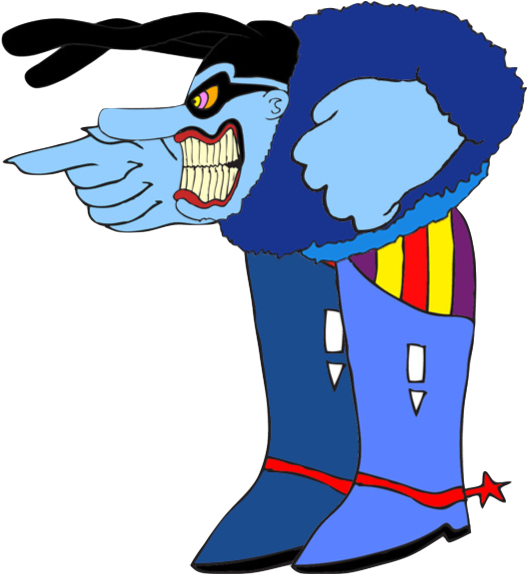
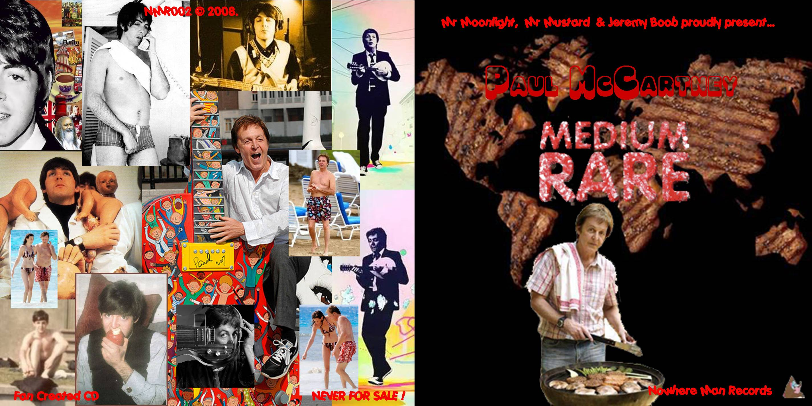
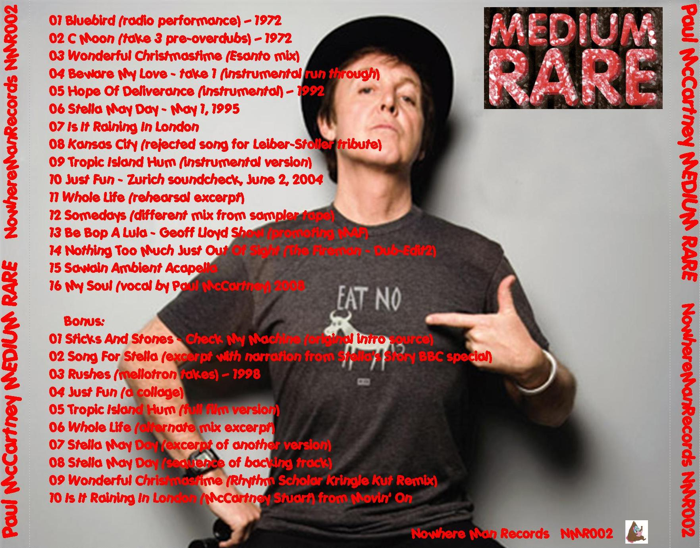
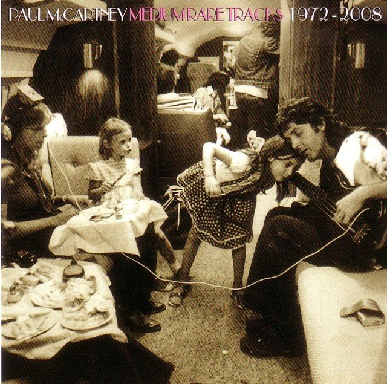
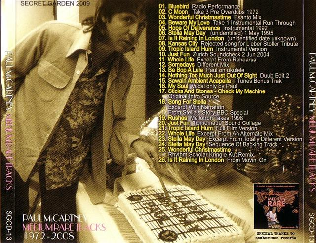

Mister Moonlight, Mr. Mustard & Jeremy Boob proudly present the second release by "Nowhere Man Records"
Now serving number 2: There are 26 prime cuts - all served medium rare - all available now on one platter (er, disc).
Get 'em while they're hot! No gratuity necessary.
- Bluebird (radio performance, 1972)
- C Moon (take 3 pre-overdubs, 1972)
- Wonderful Christmastime (Esanto Mix)
- Beware My Love (take 1 - instrumental run through)
- Hope Of Deliverance (instrumental, 1992)
- Stella May Day (May 1, 1995)
- Is It Raining In London
- Kansas City (rejected song for Leiber-Stoller tribute)
- Tropic Island Hum (instrumental version)
- Just Fun (Zurich Soundcheck June 2, 2004)
- Whole Life (rehearsal excerpt)
- Somedays (different mix from sampler tape)
- Be Bop A Lula (on ukelele - the Geoff Lloyd Show)
- Nothing Too Much Just Out Of Sight (Dub-Edit2)
- Sawain Ambient Acapella (iTunes Bonus Track)
- My Soul (vocal by Paul McCartney, 2008)
- Bonus - Sticks And Stones - Check My Machine (original intro source)
- Bonus - Song For Stella (excerpt with narration from Stella's Story BBC special)
- Bonus - Rushes (mellotron takes, 1998)
- Bonus - Just Fun (a collage)
- Bonus - Tropic Island Hum (full film version)
- Bonus - Whole Life (alternate mix excerpt)
- Bonus - Stella May Day (excerpt of another version)
- Bonus - Stella May Day (sequence of backing track)
- Bonus - Wonderful Christmastime (Rhythm Scholar Kringle Kut Remix)
- Bonus - Is It Raining In London (from Movin' On)
And then...they stole it from us:

